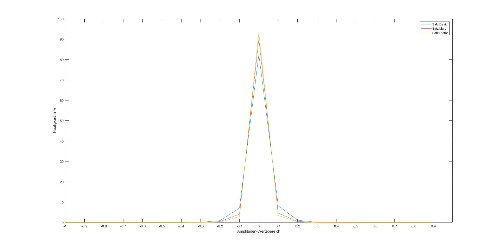

Aufgabe 3.1
Schreibe ein Matlab-Skript zur Berechnung eines Histogramms für eine Sprachdatei (Wertebereich -1 -> 1, Intervallgröße 0,1). Zeichne für jedes Gruppenmitglied mit PRAAT einen Satz (ca. 10 Wörter) auf und berechne jeweils die Histogramme (Pausen vor und hinter dem Sprachsignal mit PRAAT abschneiden). Zeichne diese für die einzelnen Dateien graphisch in dasselbe Diagramm (x-Achse: Amplituden-Wertebereiche, y-Achse: Prozentangaben).
| David Satz | Marc Satz | Stefan Satz |
|---|---|---|
Matlab-Skript Histogramm
Wie unterscheiden sich die ADVs der einzelnen Dateien?
Die ADV's schlagen unterschielich stark aus. Die Verteilung der Werte der Aufnahmen ist aber recht ähnlich und es handelt sich bei allen um Gamma - ADV. Alle ADV's haben ihr Maximum bei 0 und sind relativ gleichm#ßig zu beiden Sieten abfallend. Stefans Histogramm fällt hierbei am schnelssten ab und Davids am langsamsten. In Davids Histogramm ist außerdem eine Unsymmetrie erkennbar, so treten übermäßig häufig Werte im Bereich 0,05 bis 0,15 verglichen zum Bereich von -0,15 bis -0,05 auf.
Aus dem Histogramm läßt sich auch ablesen, wie gut die Aufnahmen ausgesteuert sind und ob das Signal einen DC-Offset hat. Wie?
Wir sehen, dass unsere Histogramme nicht von -1 bis 1 gehen, sondern nur bis etwa 0,6. Daraus schließen wir, dass wir den Wertebereich nicht voll ausgenutzt haben da unsere Aufnahmen zu leise waren. Anhand der Werte ungleich 0 kann man ablesen wie stark das Mikrofon ausgesteuert hat. Treten diese häufiger auf, sind mehr laute Töne enthalten. Da wir alle den gleichen Satz mit dem selben Mikrofon eingesprochen haben lässt sich aus diesen Werten das Aussteuern des Mikrofons ableiten. Erkennbar ist, das bei David das mikrofon am meisten ausgesteuert hat und bei Stefan am wenigsten. Diese Unterschiede sind im wesentlichen von der Laustärke der Stimme, dem Abstand zum Mikrofon, Hintergrundgeräuschen und der Länge von Pausen abhängig.
Einen DC-Offset erkennt man daran, das der Durchschnittswert der Sprachaufnahme von 0 abweichend ist. In unseren Diagramm ist zu erkennen, das sich die Maxima alle bei 0 befinden, woraus sich jedoch aufgrund der geringen Auflösung des Histogramms noch kein DC-Offset ausschließen lässt. Aufschluss bringt die Berechnung der Durchschnittswerte der Sprachsignale, an welchen klar erkennbar ist, das kein signifikanter DC-Offset auftritt. Die Werte sind: für David: -0.0000015694, für Marc: -0.0000048828 und für Stefan: +0.0000012964. Da ein DC-Offset oft vom Mikrofon abhängig ist, wir jedoch alle das selbe Mikrofon verwendet haben und trotzdem sowohl in positive als auch in negative Richtung sehr geringe Abweichungen auftreten, lässt sich hierraus schließen, das kein erkennbarer DC-Offset vorliegt.